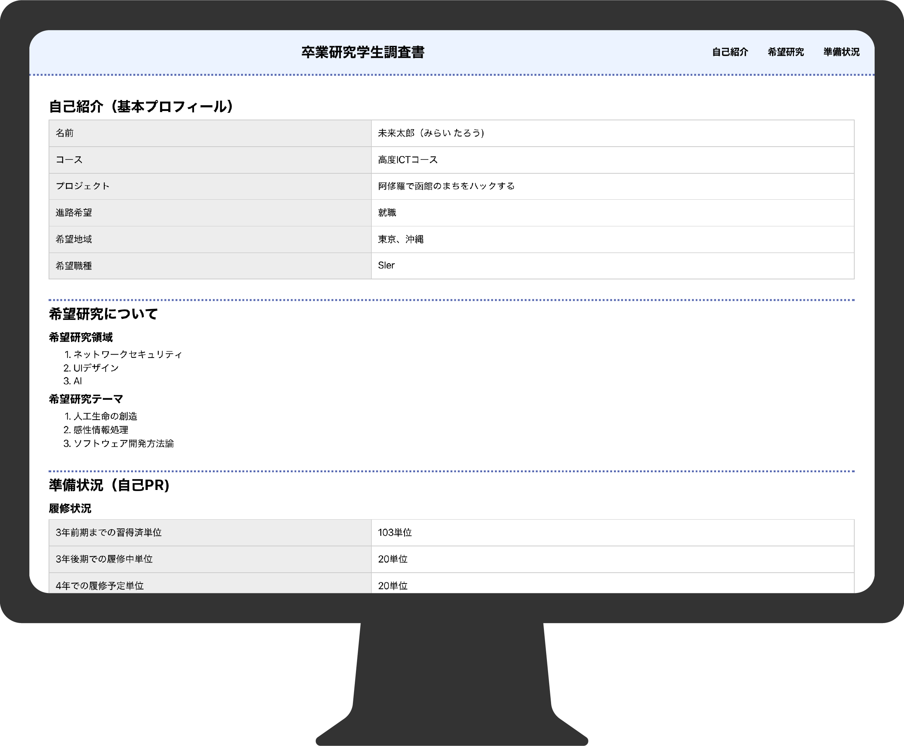

このサイトの魅力
HTMLをあまり書かない人にも安心
このページの内容を読むことによって研究室配属調査票を作成することが出来ます。HTMLやCSSを一通り学ぶことができます。
オシャレに作りたい方にも良い
質素な研究室配属調査票を作ることができるが、よりオシャレな研究室配属調査票を作成したいという人にheaderやオシャレな装飾について学ぶことが出来ます。
順番に読むことで作成可能
ヘッダーの作成から始まり素晴らしいページを作るために必要な手順を紹介します。全て読めば見やすいwebページを作るために必要な技術を習得できます。
急ぎの人はソースコードをイッキ見で
検証ツールなどでコンソールを開いたり、ソースコードを閲覧することでサクサク作成できます。
学習できる内容

Webサイトの作り方
HTML5とCSSを使って、基本的なWebサイトの作り方について学ぶことができます。
HTML5
HTML5の基本的な要素ついて学ぶことができます。
CSS
CSSの基本的なプロパティついて学ぶことができます。